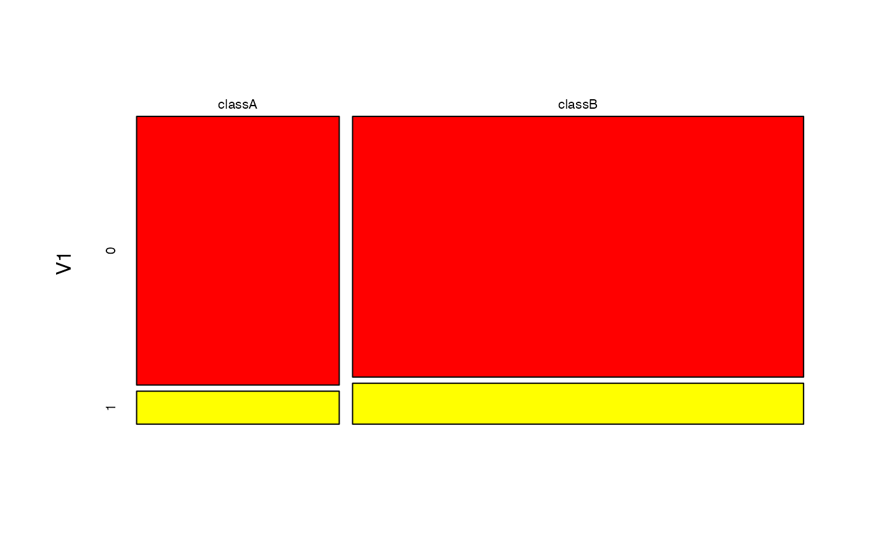

The naivebayes package provides a range of functions that implement specialised versions of the Naïve Bayes and in this short vignette their basic usage is demonstrated.
Bernoulli Naive Bayes
Train the Bernoulli Naive Bayes model
# M has to be a matrix
bnb <- bernoulli_naive_bayes(x = M, y = y, laplace = laplace)
summary(bnb)##
## =========================== Bernoulli Naive Bayes ============================
##
## - Call: bernoulli_naive_bayes(x = M, y = y, laplace = laplace)
## - Laplace: 0.5
## - Classes: 2
## - Samples: 100
## - Features: 10
## - Prior probabilities:
## - classA: 0.3
## - classB: 0.7
##
## ------------------------------------------------------------------------------## classA classB
## [1,] 0.3776967 0.6223033
## [2,] 0.3086722 0.6913278
## [3,] 0.2527589 0.7472411
## [4,] 0.4795356 0.5204644
## [5,] 0.1857756 0.8142244
## [6,] 0.3645255 0.6354745# Equivalently
head(bnb %prob% M)## classA classB
## [1,] 0.3776967 0.6223033
## [2,] 0.3086722 0.6913278
## [3,] 0.2527589 0.7472411
## [4,] 0.4795356 0.5204644
## [5,] 0.1857756 0.8142244
## [6,] 0.3645255 0.6354745# Visualise marginal distributions
plot(bnb, which = "V1", prob = "marginal")
# Obtain model coefficients
coef(bnb)## classA:0 classA:1 classB:0 classB:1
## V1 0.8870968 0.1129032 0.7394366 0.2605634
## V2 0.7903226 0.2096774 0.8521127 0.1478873
## V3 0.7580645 0.2419355 0.8098592 0.1901408
## V4 0.7258065 0.2741935 0.8661972 0.1338028
## V5 0.8225806 0.1774194 0.8239437 0.1760563
## V6 0.8548387 0.1451613 0.7816901 0.2183099
## V7 0.7903226 0.2096774 0.8098592 0.1901408
## V8 0.8225806 0.1774194 0.8943662 0.1056338
## V9 0.8225806 0.1774194 0.7957746 0.2042254
## V10 0.8548387 0.1451613 0.7253521 0.2746479Equivalent calculation with naive_bayes function
# It is made sure that the columns are factors with the 0-1 levels)
df <- as.data.frame(lapply(as.data.frame(M), factor, levels = c(0,1)))
# sapply(df, class)
nb <- naive_bayes(df, y, laplace = laplace)
head(nb %prob% df)## classA classB
## [1,] 0.3776967 0.6223033
## [2,] 0.3086722 0.6913278
## [3,] 0.2527589 0.7472411
## [4,] 0.4795356 0.5204644
## [5,] 0.1857756 0.8142244
## [6,] 0.3645255 0.6354745# Visualise marginal distributions
plot(nb, which = "V1", prob = "marginal")
Multinomial Naive Bayes
Train the Multinomial Naive Bayes
mnb <- multinomial_naive_bayes(x = M, y = y, laplace = laplace)
summary(mnb)##
## ========================== Multinomial Naive Bayes ===========================
##
## - Call: multinomial_naive_bayes(x = M, y = y, laplace = laplace)
## - Laplace: 1
## - Classes: 2
## - Samples: 100
## - Features: 10
## - Prior probabilities:
## - classA: 0.3
## - classB: 0.7
##
## ------------------------------------------------------------------------------# Classification
head(mnb %class% M)## [1] classB classB classB classB classB classB
## Levels: classA classB# Posterior probabilities
head(mnb %prob% M)## classA classB
## [1,] 0.3687065 0.6312935
## [2,] 0.2588635 0.7411365
## [3,] 0.2104721 0.7895279
## [4,] 0.3570342 0.6429658
## [5,] 0.4477071 0.5522929
## [6,] 0.2707406 0.7292594# Parameter estimates
coef(mnb)## classA classB
## V1 0.10704607 0.09941176
## V2 0.09078591 0.10411765
## V3 0.10704607 0.09352941
## V4 0.09485095 0.09764706
## V5 0.10433604 0.10235294
## V6 0.08672087 0.10294118
## V7 0.10704607 0.10470588
## V8 0.10162602 0.09823529
## V9 0.10569106 0.09352941
## V10 0.09485095 0.10352941Poisson Naive Bayes
Train the Poisson Naive Bayes
laplace <- 0
pnb <- poisson_naive_bayes(x = M, y = y, laplace = laplace)
summary(pnb)##
## ============================ Poisson Naive Bayes =============================
##
## - Call: poisson_naive_bayes(x = M, y = y, laplace = laplace)
## - Laplace: 0
## - Classes: 2
## - Samples: 100
## - Features: 10
## - Prior probabilities:
## - classA: 0.5
## - classB: 0.5
##
## ------------------------------------------------------------------------------## classA classB
## [1,] 0.3984880 0.6015120
## [2,] 0.4600090 0.5399910
## [3,] 0.6037717 0.3962283
## [4,] 0.5234183 0.4765817
## [5,] 0.4083384 0.5916616
## [6,] 0.5491622 0.4508378# Visualise marginal distributions
plot(pnb, which = "V1", prob = "marginal")
# Obtain model coefficients
coef(pnb)## classA classB
## V1 2.90 2.82
## V2 3.22 3.04
## V3 2.80 2.76
## V4 3.44 3.02
## V5 2.78 3.44
## V6 2.66 2.90
## V7 3.02 3.06
## V8 2.94 3.32
## V9 2.92 3.24
## V10 2.68 3.28Equivalent calculation with naive_bayes function
nb2 <- naive_bayes(M, y, usepoisson = TRUE, laplace = laplace)
head(predict(nb2, type = "prob"))## classA classB
## [1,] 0.3984880 0.6015120
## [2,] 0.4600090 0.5399910
## [3,] 0.6037717 0.3962283
## [4,] 0.5234183 0.4765817
## [5,] 0.4083384 0.5916616
## [6,] 0.5491622 0.4508378# Visualise marginal distributions
plot(nb2, which = "V1", prob = "marginal")Gaussian Naive Bayes
Train the Gaussian Naive Bayes
gnb <- gaussian_naive_bayes(x = M, y = y)
summary(gnb)##
## =========================== Gaussian Naive Bayes ============================
##
## - Call: gaussian_naive_bayes(x = M, y = y)
## - Samples: 150
## - Features: 4
## - Prior probabilities:
## - setosa: 0.3333
## - versicolor: 0.3333
## - virginica: 0.3333
##
## -----------------------------------------------------------------------------# Visualise class conditional distributions
plot(gnb, which = "Sepal.Width", prob = "conditional")
# Obtain parameter estimates
coef(gnb)## setosa:mu setosa:sd versicolor:mu versicolor:sd virginica:mu
## Sepal.Length 5.006 0.3524897 5.936 0.5161711 6.588
## Sepal.Width 3.428 0.3790644 2.770 0.3137983 2.974
## Petal.Length 1.462 0.1736640 4.260 0.4699110 5.552
## Petal.Width 0.246 0.1053856 1.326 0.1977527 2.026
## virginica:sd
## Sepal.Length 0.6358796
## Sepal.Width 0.3224966
## Petal.Length 0.5518947
## Petal.Width 0.2746501## setosa:mu versicolor:mu virginica:mu
## Sepal.Length 5.006 5.936 6.588
## Sepal.Width 3.428 2.770 2.974
## Petal.Length 1.462 4.260 5.552
## Petal.Width 0.246 1.326 2.026Equivalent calculation with general naive_bayes function.
nb3 <- naive_bayes(M, y)
summary(nb3)##
## ================================ Naive Bayes =================================
##
## - Call: naive_bayes.default(x = M, y = y)
## - Laplace: 0
## - Classes: 3
## - Samples: 150
## - Features: 4
## - Conditional distributions:
## - Gaussian: 4
## - Prior probabilities:
## - setosa: 0.3333
## - versicolor: 0.3333
## - virginica: 0.3333
##
## ------------------------------------------------------------------------------Non-Parametric Naive Bayes
Train the Non-Parametric Naive Bayes
nnb <- nonparametric_naive_bayes(x = M, y = y)
plot(nnb, 1, prob = "conditional")
Equivalent calculation with general naive_bayes function:
nb4 <- naive_bayes(M, y, usekernel = TRUE)
plot(nb4, 1, prob = "conditional")